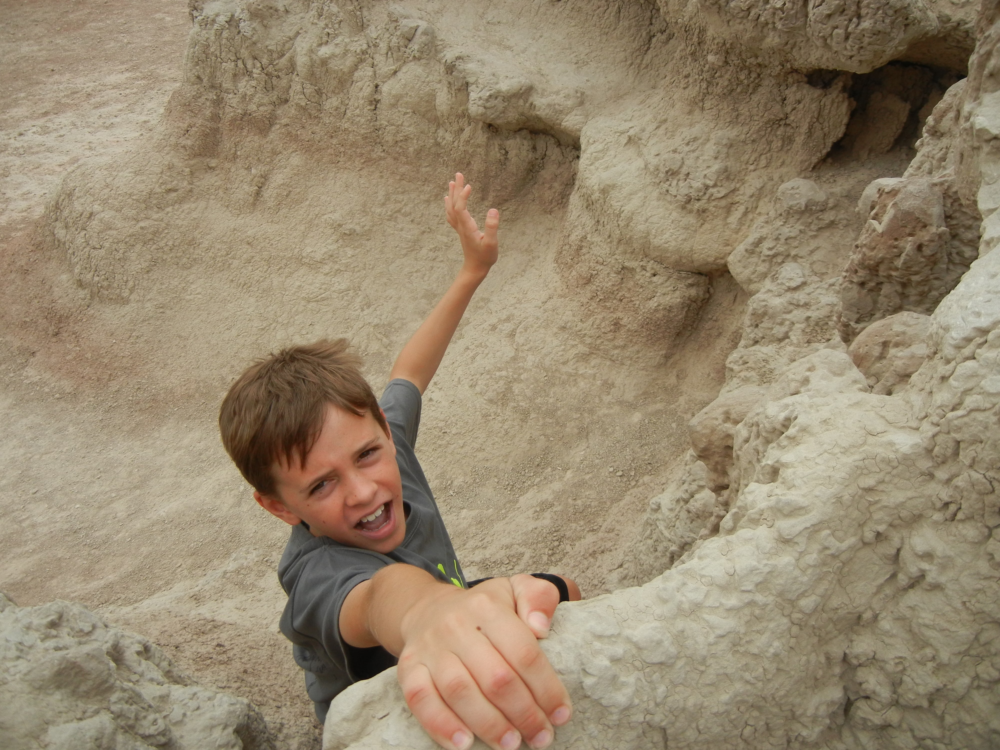
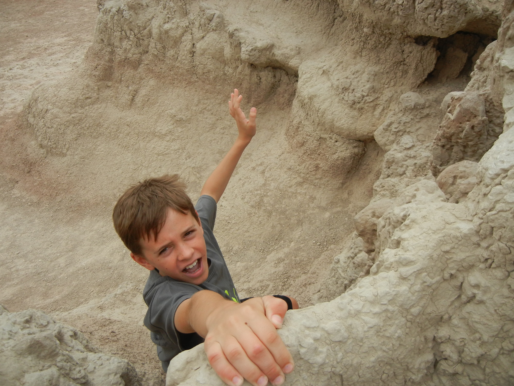

In 2016 I loaded my kids into the minivan and took them on a drive across the Northern midwest states. We went to Wisconsin Dells, the Badlands, Mount Rushmore, Jewel Cave, and Custer State Park.

 



I didn't plan for the fact that the Strugis Motorcycle rally would overlap with our trip. Many towns were closed to through traffic and the lack of internet required that we use paper maps. Often.